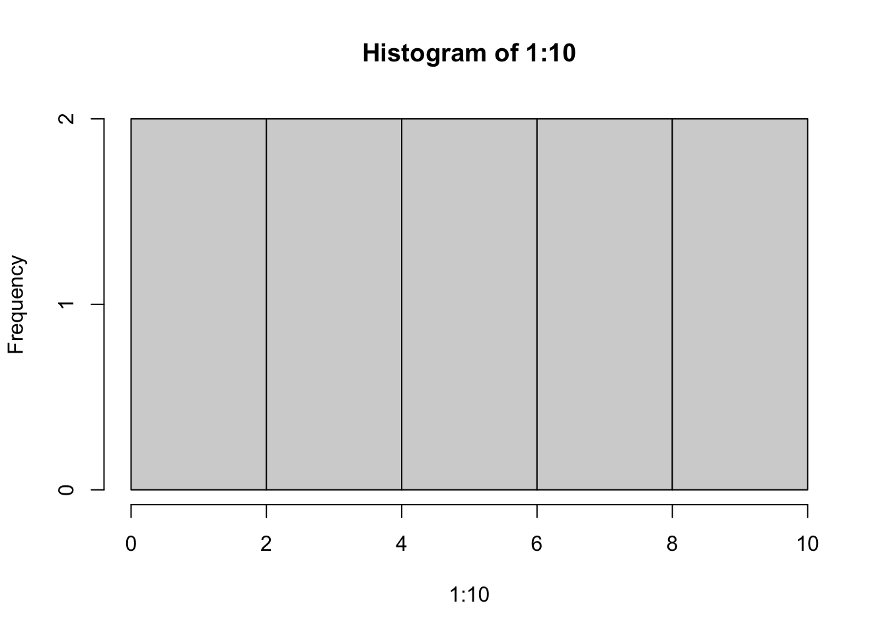

Markdown Format Test
1 Tabs
1.1 Question 1
1.1.1 Question
What does the uniform distribution look like?
1.1.2 Answer

3 Method 3 html
hist(1:10)
This works! I can also control if the code and/or results must be shown by controlling the chunk options.
But, this is not optimal because the code is messy and ugly with all the raw html. Copy-pasting this multiple times is not ideal. The ID used collapseExample1 needs to be unique every time this code block is used.
Is there some way to package this block into a reusable unit like a function or something? I am thinking something like an R function, where I can pass in code to be evaluated (or code that don’t need to be evaluated), chunk options (eval, echo, results, etc..) and state of the panel (open/closed).
collapsible_panel(code=NULL,echo=TRUE,results=“show”,state=“closed”)
4 Method 4 simple html
for code output
hist(1:10)Click for Answer

If you see html:
The knitr chunk option results=‘asis’ has done its job correctly. The problem is Pandoc’s Markdown treats indented lines (by four spaces) as literal code blocks ().
The solution is either remove the leading spaces, or protect them. It seems you do not want to do the former. You can pass your HTML code to htmltools::HTML() so that the output is protected during Pandoc’s conversion